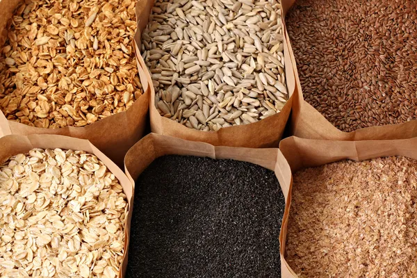
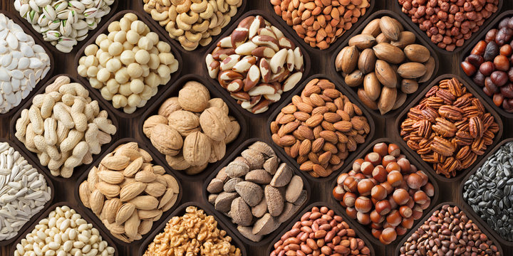
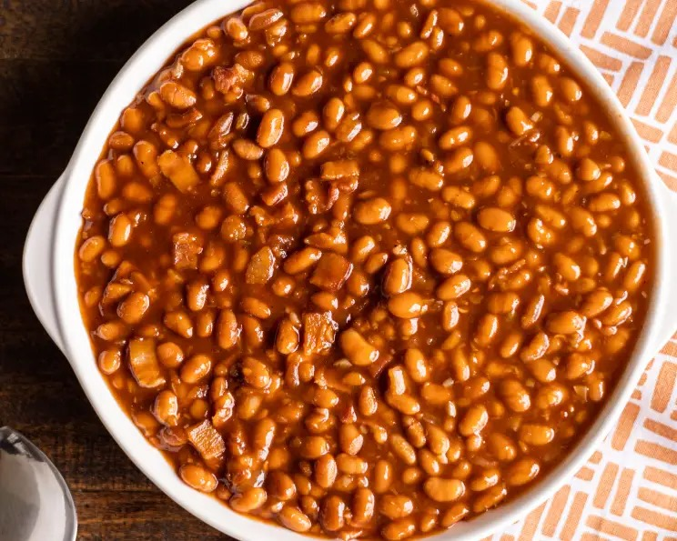
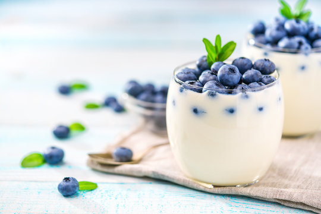
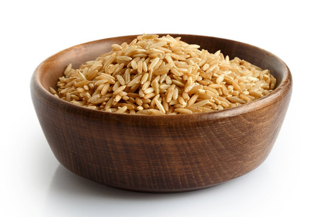

|
Fruits and vegetables are vital for overweight individuals due to their low-calorie, high-nutrient nature, aiding in weight management. Rich in fiber, vitamins, and minerals, they promote satiety, aid digestion, and offer essential nutrients crucial for overall health and supporting weight loss goals. Their high water content helps with hydration and feeling full, facilitating a balanced diet while controlling calorie intake. |
 |
Whole grains are crucial for overweight individuals as they offer fiber, aiding digestion and promoting a feeling of fullness, supporting weight management. Rich in nutrients and slower to digest, they help stabilize blood sugar levels, reducing cravings and supporting sustained energy throughout the day. Incorporating whole grains into meals supports a balanced diet, aiding in weight loss by controlling appetite and providing essential nutrients. |
| FRUITS AND VEGETABLES | WHOLE GRAINS | ||
| Fish is vital for overweight individuals due to its high protein content, aiding in weight management by promoting satiety and supporting muscle maintenance during weight loss. Rich in omega-3 fatty acids, fish assists in reducing inflammation and regulating metabolism, beneficial for achieving healthy body weight goals. Incorporating fish into the diet provides a lean protein source with essential nutrients, supporting overall health while contributing to weight management efforts. |
 | Nuts are crucial for overweight individuals as they offer healthy fats, protein, and fiber, promoting satiety and aiding weight management by controlling hunger. Rich in nutrients and antioxidants, nuts support metabolic health, assisting in balanced weight loss efforts. Including nuts in moderation in the diet provides a satisfying snack option, supporting overall health while helping to manage weight effectively. |
|
| FISH | NUTS | ||
|  | Baked beans are beneficial for overweight individuals due to their high fiber and protein content, supporting weight management by promoting satiety and aiding in appetite control. Rich in nutrients and low in fat, baked beans offer a satisfying meal component that helps regulate blood sugar levels, contributing to sustained energy and reduced cravings. Including baked beans in the diet provides a nutritious option for weight management while offering essential nutrients crucial for overall health. |
Olive oil is crucial for overweight individuals as it provides healthy monounsaturated fats, aiding in weight management by promoting satiety and supporting heart health. Rich in antioxidants and anti-inflammatory properties, olive oil assists in reducing inflammation and supporting a balanced metabolism. Incorporating olive oil in moderation into meals offers a healthy fat source, contributing to overall health while assisting in weight control efforts. |
|
| BAKED BEANS | OLIVE OIL | ||
|  | Yogurt is vital for overweight individuals as it's rich in protein, aiding in weight management by promoting satiety and supporting muscle maintenance during weight loss. Probiotics in yogurt assist in gut health, potentially influencing weight regulation and digestion, contributing to balanced weight management. Including yogurt in the diet provides a low-calorie, nutrient-dense option that supports overall health while aiding in weight control. |
 | Brown rice is valuable for overweight individuals due to its high fiber content, aiding in digestion and promoting a feeling of fullness, supporting weight management by controlling appetite. Rich in nutrients and low in calories, brown rice offers sustained energy release, helping stabilize blood sugar levels and reduce cravings, beneficial for weight loss efforts. Including brown rice in meals provides a nutrient-dense option, supporting a balanced diet while assisting in weight control. |
| YOGURT | BROWN RICE | ||